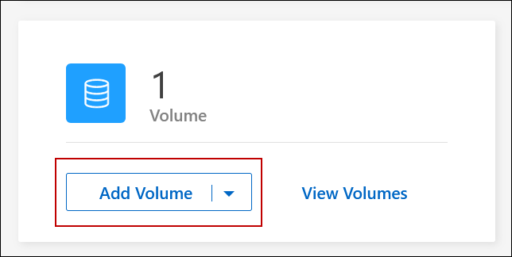
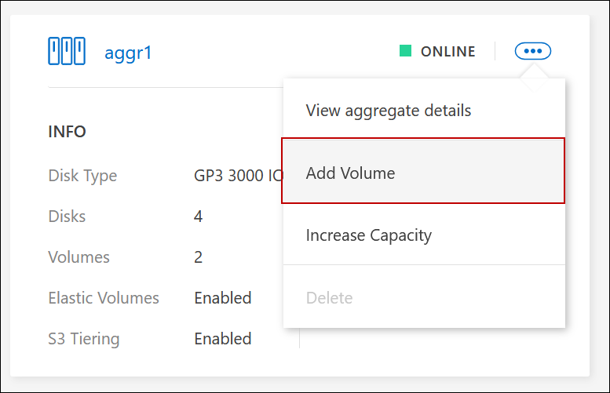
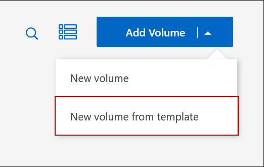
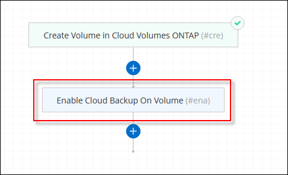
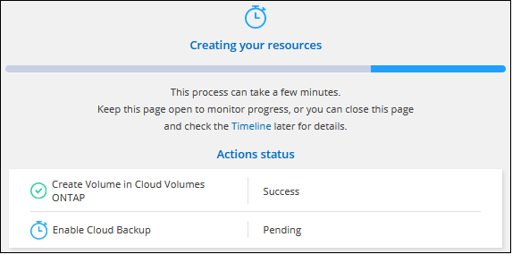
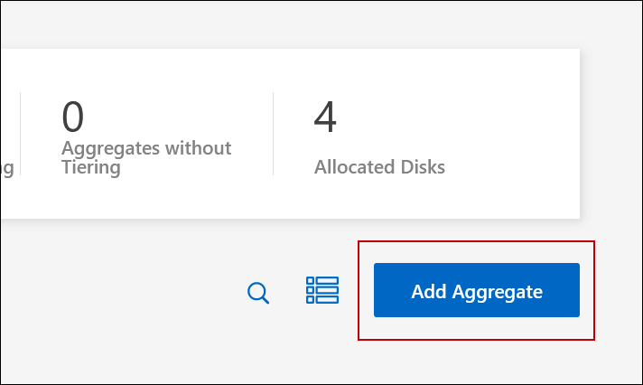

Release notes
Release notes
Create FlexVol volumes
 Suggest changes
Suggest changes
If you need more storage after you launch your initial Cloud Volumes ONTAP system, you can create new FlexVol volumes for NFS, CIFS, or iSCSI from BlueXP.
BlueXP provides several ways to create a new volume:
-
Specify details for a new volume and let BlueXP handle the underlying data aggregates for you. Learn more
-
Create a volume on a data aggregate of your choice. Learn more
-
Create volume from a template to optimize the volume for the workload requirements for certain applications, such as databases or streaming services. Learn more
-
Create a volume on the second node in an HA configuration. Learn more
Before you get started
A few notes about volume provisioning:
-
When you create an iSCSI volume, BlueXP automatically creates a LUN for you. We’ve made it simple by creating just one LUN per volume, so there’s no management involved. After you create the volume, use the IQN to connect to the LUN from your hosts.
-
You can create additional LUNs from System Manager or the CLI.
Create a volume
The most common way to create a volume is to specify the type of volume that you need and then BlueXP handles the disk allocation for you. But you also have the option to choose the specific aggregate on which you want to create the volume.
-
From the left navigation menu, select Storage > Canvas.
-
On the Canvas page, double-click the name of the Cloud Volumes ONTAP system on which you want to provision a FlexVol volume.
-
Create a new volume by letting BlueXP handle the disk allocation for you, or choose a specific aggregate for the volume.
Choosing a specific aggregate is recommended only if you have a good understanding of the data aggregates on your Cloud Volumes ONTAP system.
Any aggregateOn the Overview tab, navigate to the Volumes tile, and click Add Volume.
Specific aggregateOn the Aggregates tab, navigate to the desired aggregate tile. Click the menu icon, and then click Add Volume.
 -
Follow the steps in the wizard to create the volume.
-
Volumes, Details, Protection, and Tags: Enter basic details about the volume and select a Snapshot policy.
Some of the fields on this page are self-explanatory. The following list describes fields for which you might need guidance:
Field Description Volume Name
The identifiable name you can enter for the new volume.
Volume Size
The maximum size that you can enter largely depends on whether you enable thin provisioning, which enables you to create a volume that is bigger than the physical storage currently available to it.
Tags
Tags that you add to a volume are associated with the Application Templates service, which can help you organize and simplify the management of your resources.
Storage VM (SVM)
A storage VM is a virtual machine running within ONTAP that provides storage and data services to your clients. You might know this as an SVM or a vserver. Cloud Volumes ONTAP is configured with one storage VM by default, but some configurations support additional storage VMs. You can specify the Storage VM for the new volume.
Snapshot Policy
A Snapshot copy policy specifies the frequency and number of automatically created NetApp Snapshot copies. A NetApp Snapshot copy is a point-in-time file system image that has no performance impact and requires minimal storage. You can choose the default policy or none. You might choose none for transient data: for example, tempdb for Microsoft SQL Server.
-
Protocol: Choose a protocol for the volume (NFS, CIFS, or iSCSI) and then provide the required information.
If you select CIFS and a server isn’t set up, BlueXP prompts you to set up CIFS connectivity after you click Next.
The following sections describe fields for which you might need guidance. The descriptions are organized by protocol.
NFS- Access control
-
Choose a custom export policy to make the volume available to clients.
- Export policy
-
Defines the clients in the subnet that can access the volume. By default, BlueXP enters a value that provides access to all instances in the subnet.
CIFS- Permissions and users/groups
-
Enables you to control the level of access to an SMB share for users and groups (also called access control lists or ACLs). You can specify local or domain Windows users or groups, or UNIX users or groups. If you specify a domain Windows user name, you must include the user’s domain using the format domain\username.
- DNS Primary and Secondary IP Address
-
The IP addresses of the DNS servers that provide name resolution for the CIFS server. The listed DNS servers must contain the service location records (SRV) needed to locate the Active Directory LDAP servers and domain controllers for the domain that the CIFS server will join.
- Active Directory Domain to join
-
The FQDN of the Active Directory (AD) domain that you want the CIFS server to join.
- Credentials authorized to join the domain
-
The name and password of a Windows account with sufficient privileges to add computers to the specified Organizational Unit (OU) within the AD domain.
- CIFS server NetBIOS name
-
A CIFS server name that is unique in the AD domain.
- Organizational Unit
-
The organizational unit within the AD domain to associate with the CIFS server. The default is CN=Computers.
-
To configure Azure AD Domain Services as the AD server for Cloud Volumes ONTAP, enter OU=AADDC Computers or OU=AADDC Users in this field.
Azure Documentation: Create an Organizational Unit (OU) in an Azure AD Domain Services managed domain
-
- DNS Domain
-
The DNS domain for the Cloud Volumes ONTAP storage virtual machine (SVM). In most cases, the domain is the same as the AD domain.
- NTP Server
-
Select Use Active Directory Domain to configure an NTP server using the Active Directory DNS. If you need to configure an NTP server using a different address, then you should use the API. See the BlueXP automation docs for details.
Note that you can configure an NTP server only when creating a CIFS server. It’s not configurable after you create the CIFS server.
iSCSI- LUN
-
iSCSI storage targets are called LUNs (logical units) and are presented to hosts as standard block devices. When you create an iSCSI volume, BlueXP automatically creates a LUN for you. We’ve made it simple by creating just one LUN per volume, so there’s no management involved. After you create the volume, use the IQN to connect to the LUN from your hosts.
- Initiator group
-
Initiator groups (igroups) specify which hosts can access specified LUNs on the storage system
- Host initiator (IQN)
-
iSCSI targets connect to the network through standard Ethernet network adapters (NICs), TCP offload engine (TOE) cards with software initiators, converged network adapters (CNAs) or dedicated host bust adapters (HBAs) and are identified by iSCSI qualified names (IQNs).
-
Disk Type: Choose an underlying disk type for the volume based on your performance needs and cost requirements.
-
Usage Profile & Tiering Policy: Choose whether to enable or disable storage efficiency features on the volume and then select a volume tiering policy.
ONTAP includes several storage efficiency features that can reduce the total amount of storage that you need. NetApp storage efficiency features provide the following benefits:
- Thin provisioning
-
Presents more logical storage to hosts or users than you actually have in your physical storage pool. Instead of preallocating storage space, storage space is allocated dynamically to each volume as data is written.
- Deduplication
-
Improves efficiency by locating identical blocks of data and replacing them with references to a single shared block. This technique reduces storage capacity requirements by eliminating redundant blocks of data that reside in the same volume.
- Compression
-
Reduces the physical capacity required to store data by compressing data within a volume on primary, secondary, and archive storage.
-
Review: Review details about the volume and then click Add.
-
BlueXP creates the volume on the Cloud Volumes ONTAP system.
Create a volume from a template
If your organization has created Cloud Volumes ONTAP volume templates so you can deploy volumes that are optimized for the workload requirements for certain applications, follow the steps in this section.
The template should make your job easier because certain volume parameters will already be defined in the template, such as disk type, size, protocol, snapshot policy, cloud provider, and more. When a parameter is already predefined, you can just skip to the next volume parameter.

|
You can only create NFS or CIFS volumes when using templates. |
-
From the left navigation menu, select Storage > Canvas.
-
On the Canvas page, click the name of the Cloud Volumes ONTAP system on which you want to provision a volume.
-
Navigate to the Volumes tab and click Add Volume > New Volume From Template.

-
In the Select Template page, select the template that you want to use to create the volume and click Next.

The Editor page is displayed.

-
Above the Action panel, enter a name for the template.
-
Under Context, the Working Environment is filled in with the name of the working environment with which you started. Select the Storage VM where the volume will be created.
-
Add values for all of the parameters that are not hard-coded from the template. See Create a volume for details about all the parameters needed to complete the deployment of a Cloud Volumes ONTAP volume.
-
Click Apply to save the configured parameters to the selected Action.
-
If there are no other Actions that you need to define (for example, configuring BlueXP backup and recovery), click Save Template.
If there are other actions, click the action in the left pane to display the parameters you need to complete.

For example, if the Enable Cloud Backup on Volume action requires that you select a backup policy, you can do that now.
-
Once configuration for the template actions are complete, click Save Template.
Cloud Volumes ONTAP provisions the volume and displays a page so that you can see the progress.

Additionally, if any secondary action is implemented in the template, for example, enabling BlueXP backup and recovery on the volume, that action is also performed.
Create a volume on the second node in an HA configuration
By default, BlueXP creates volumes on the first node in an HA configuration. If you need an active-active configuration, in which both nodes serve data to clients, you must create aggregates and volumes on the second node.
-
From the left navigation menu, select Storage > Canvas.
-
On the Canvas page, double-click the name of the Cloud Volumes ONTAP working environment on which you want to manage aggregates.
-
On the Aggregates tab, click Add Aggregate.
-
From the Add Aggregate screen, create the aggregate.

-
For Home Node, choose the second node in the HA pair.
-
After BlueXP creates the aggregate, select it and then click Create volume.
-
Enter details for the new volume, and then click Create.
BlueXP creates the volume on the second node in the HA pair.
After you create a volume
If you provisioned a CIFS share, give users or groups permissions to the files and folders and verify that those users can access the share and create a file.
If you want to apply quotas to volumes, you must use System Manager or the CLI. Quotas enable you to restrict or track the disk space and number of files used by a user, group, or qtree.